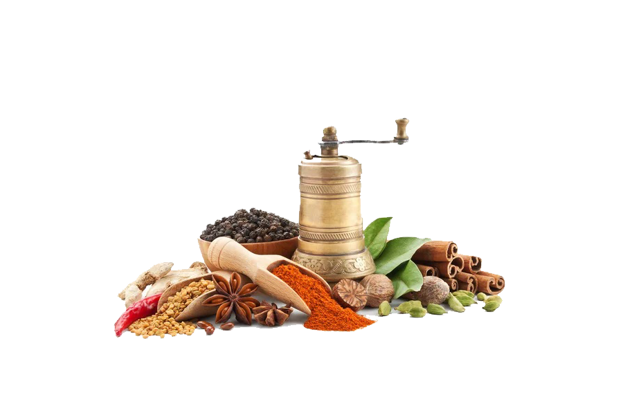

Sliding recipes are much more tasty as food than sliding images.:D
It may not be in my best interest to admit this, but here goes nothing:grilling chicken scares me. Just too easy to get wrong. Black, cremated..


2 cups cream, 20 G dark chocolate, chopped to beige of Earl Gray, six egg yolks, 3 tbsp of sugar, and 1/2 cup whipping ….
more

Mention potatoes on pizza and you'll get one of two responses. from the folks who have tried it, you can expect an enthusiastic thumbs up...
More
You know how baking is all the rage these days? bacon dipped in chocolate, bacon topped donuts, bacon beurre blanc and so and so...
More
It may not be in my best interest to admit this, but here it goes nothing: grilled chicken scares me. it's just too easy to…
More
If there's anything better than the perfect baked potato, it would have to be a twiced baked potato. I am sure everyone's…
Read More
Quis sed mid elit; risus alquet placerat, Pid et, vel phasellus augue…
More
Quis sed mid elit; risus alquet placerat, Pid et, vel phasellus augue…
More
Recent
Popular

Steaks in Garlic-Lime
(4.4 / 5)
Chocolate earl Grey Pots de Creme Recipe
(4.3 / 5)
Pesto Pizza With Roasted Garlic and Potato
(4.3 / 5)